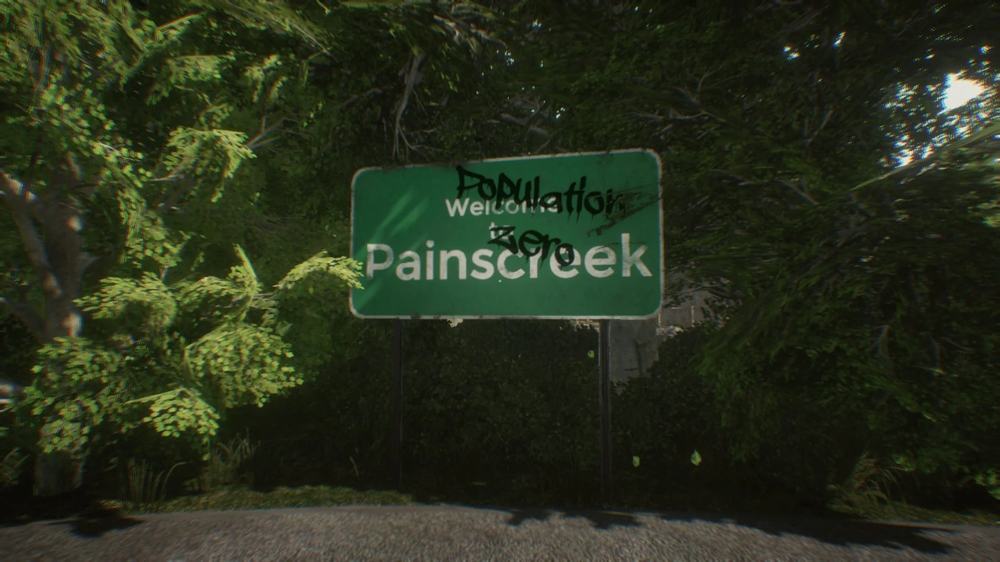

Um assassinato transforma uma cidade antes cheia de vida, em uma cidade fantasma. O caso nunca foi resolvido, e até hoje, não se sabe quem é o assassino, qual foi a arma do crime, ou qual foi o motivo. E é assim que começa The Painscreek Killings.
